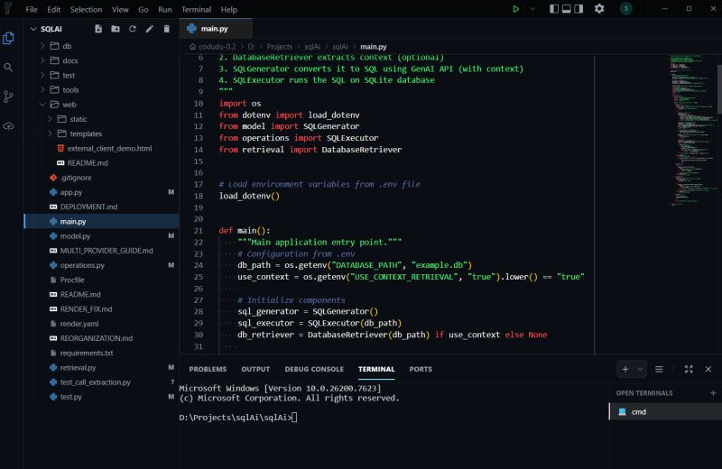

Introducing Yavin: an AI-agentic code editor
Autocomplete was a great start. This is an IDE that thinks, plans and executes — and the v1.4.0 foundations that make that possible.

I announced Yavin publicly on 23 January 2026. This post is the long version of that announcement: what Yavin is, what shipped in v1.4.0, and why each piece exists.
The software development landscape is shifting. While autocomplete was a great start, it is time for an IDE that actually thinks, plans, and executes.
Introducing Yavin: An AI-agentic code editor built for autonomous development.
The goal isn't just to build a better assistant, but a multi-agent ecosystem that actively participates in the development process. While you focus on architecture, Yavin's agents collaborate to solve complex tasks, manage backlogs, and self-correct errors.
Key foundations of the v1.4.0 release:
- High-performance Rust-based indexer (50–60x speed boost).
- Intelligent model orchestration for speed and cost-efficiency.
- Multi-language AST parsing (Python, TS, Rust, Go, Java).
- Active Context Engine for deep dependency mapping.
The future of coding is moving from assistance to autonomy.
Why agentic, and not just better autocomplete
Suggestion-based tools answer a narrow question: given the last few lines, what comes next? That is genuinely useful, and it is also the ceiling. The model never sees the task, only the cursor.
An agentic editor inverts that. You hand over an outcome — "make this endpoint paginated", "get this suite green" — and the system plans the steps, edits across files, runs things, reads what came back, and corrects itself. The unit of work becomes a task, not a keystroke.
That shift only works if three things are true: the system must be able to find the relevant code quickly, understand its structure rather than its text, and know what depends on what before it changes anything. The v1.4.0 foundations map one-to-one onto those requirements.
The four foundations of v1.4.0
01 Rust-based indexer — 50–60× faster
Every agent action starts with a lookup: which files matter here? On a large repository a slow index makes the whole system feel broken, because the cost is paid again on every single step, not once per session. Moving the indexer to Rust took that cost from "noticeable" to "invisible" — a 50–60× speed boost over the previous implementation. Agents can afford to re-check their assumptions mid-task instead of guessing.
02 Intelligent model orchestration
Not every step deserves the same model. Classifying an intent, renaming a symbol and designing a refactor have wildly different difficulty — and wildly different price tags. Orchestration routes each step to an appropriate model, so simple work runs on something fast and cheap while the hard reasoning goes to a stronger model. For a tool that may take dozens of steps per task, this is the difference between usable and unaffordable.
03 Multi-language AST parsing
Most retrieval pipelines chop files into fixed-size text chunks, which cheerfully split a function in half. Parsing to an abstract syntax tree instead means the editor works in units the language actually has: functions, classes, imports, call sites. v1.4.0 covers Python, TypeScript, Rust, Go and Java. An agent asked to change a function gets that whole function and its signature, not an arbitrary 40-line window of it.
04 Active Context Engine
Knowing where a symbol is defined is not enough; what matters before an edit is what breaks if you change it. The Active Context Engine does deep dependency mapping — tracing relationships across the codebase so the context handed to a model includes the callers and collaborators of the thing being changed, not just the file it lives in. This is what separates "the model guessed from one file" from "the model saw the blast radius".
A multi-agent ecosystem, not one assistant
The design goal was never a smarter chat box. It was several agents that collaborate on a task, manage backlogs, and self-correct errors — while you stay on the architecture.
Self-correction is the part that changes the feel of the tool. A single-shot assistant produces an edit and stops; whether it compiled is your problem. An agent that can run the thing it just wrote, read the failure and try again is doing the loop you would otherwise do by hand.
The question everyone asks: where are the brakes?
The first substantive comment on the announcement went straight to it — trust boundaries, rollback, and human-in-the-loop control as autonomy increases. It's the right question, and it's where these tools get judged.
Two mechanisms in Yavin answer this directly:
- Side-by-side review. Every AI change is shown against the original, and nothing lands until it's accepted. Autonomy decides what to propose; the human decides what gets kept.
- A sandboxed execution engine. Agents that run code need a hard boundary. Yavin's Rust and Tauri engine blocks unsafe commands and any file access outside the open project, with time limits, clean cancellation and crash handling so a run can always be ended.
Where this goes next
v1.4.0 is the foundation, not the finish line. The interesting work ahead is in the agentic logic sitting on top of these primitives — planning, backlog management, and how agents hand work to each other.
The honest summary of the project: the future of coding is moving from assistance to autonomy, and the unglamorous infrastructure — indexing, parsing, dependency mapping, sandboxing — is what decides whether that's trustworthy or just fast.
If an AI agent could take over one repetitive part of your workflow today, what would you hand over first?
Resources
- The original announcement on LinkedIn — 23 January 2026, including the discussion in the comments.
- Yavin-Rust-1 on GitHub — the current TypeScript + Rust codebase.
- Yavin v1.2.0 — the earlier Python-first release, where the retrieval layer was worked out.
- All projects — Yavin, Scarif and the rest.